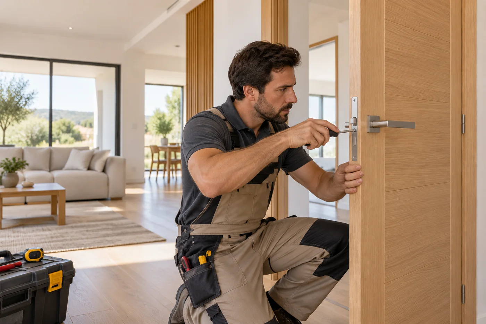
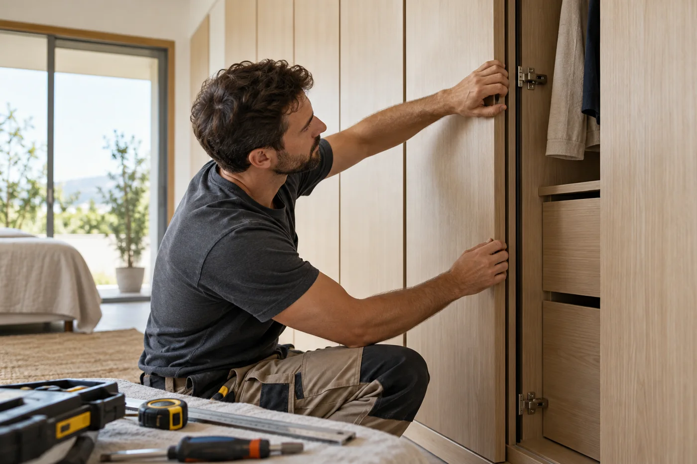

EL TRABAJO
El oficio detrás
del resultado.
Puertas y elementos de carpintería influyen en cómo se recorre y se aprovecha un espacio. Valoramos su instalación o adaptación como parte de la reforma.
Qué podemos valorar
- Instalación de puertas interiores
- Ajustes de elementos de carpintería
- Carpintería vinculada a la reforma
El alcance concreto, los materiales y las condiciones se definen según cada espacio y presupuesto.

ANTES DE EMPEZAR
Cuéntanos
los detalles.
Cuéntanos qué elementos necesitas cambiar, sus medidas aproximadas y el acabado que buscas. El material y los herrajes se concretan en el presupuesto.
Hablemos de carpintería ↗Llama al 652 465 019